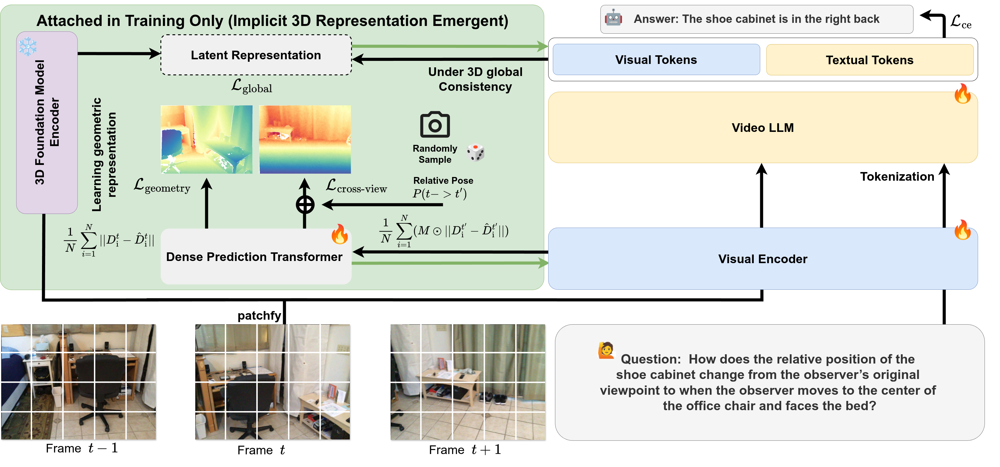
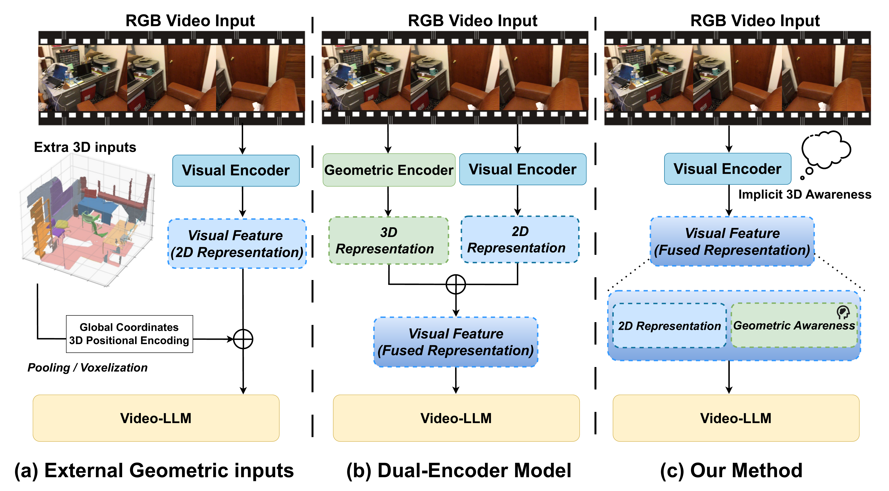
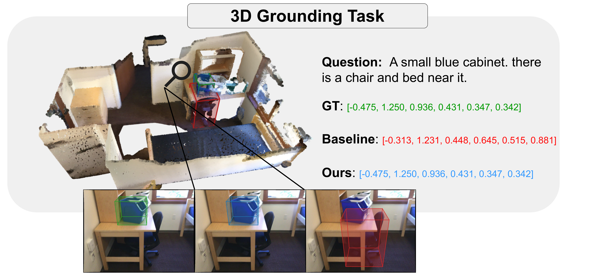
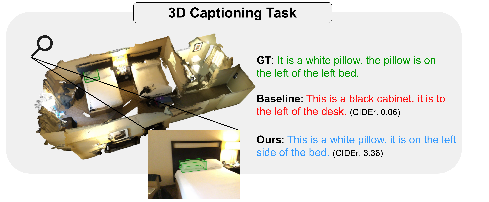
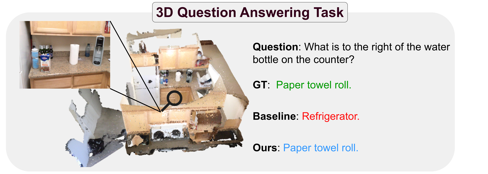

Abstract
Leveraging 3D information within Multimodal Large Language Models (MLLMs) has recently shown significant advantages for indoor scene understanding. However, existing methods, including those using explicit ground-truth 3D positional encoding and those grafting external 3D foundation models for implicit geometry, struggle with the trade-off in 2D-3D representation fusion, leading to suboptimal deployment. To this end, we propose 3D-Implicit Depth Emergence, a method that reframes 3D perception as an emergent property derived from geometric self-supervision rather than explicit encoding. Our core insight is the Implicit Geometric Emergence Principle (IGEP): by strategically leveraging privileged geometric supervision through mechanisms like a fine-grained geometry validator and global representation constraints, we construct an information bottleneck. This bottleneck forces the model to maximize the mutual information between visual features and 3D structures, allowing 3D awareness to emerge naturally within a unified visual representation. Unlike existing approaches, our method enables 3D perception to emerge implicitly, disentangling features in dense regions and, crucially, eliminating depth and pose dependencies during inference with zero latency overhead.
Method

3D-IDE is guided by the Implicit Geometric Emergence Principle (IGEP). Rather than treating geometry as a mandatory input, we regard it as privileged supervision available only during training. A lightweight, training-only geometric validator and a global 3D teacher provide fine-grained and scene-level geometric signals that push the visual encoder to embed 3D structure directly in its tokens, without modifying the inference-time interface. The composite training objective is:
Ltotal = Lce + Lgeometry + Lcross-view + Lglobal
Approach Comparison

Main Results
Performance comparison on 3D scene understanding benchmarks. Bold indicates best result within group.
| Method | 3D Inputs | ScanRefer | Multi3DRefer | Scan2Cap | ScanQA | SQA3D | ||||
|---|---|---|---|---|---|---|---|---|---|---|
| Acc@.25 | Acc@.5 | F1@.25 | F1@.5 | C@.5 | B-4@.5 | C | EM | EM | ||
| Generalists (with 3D geometric inputs) | ||||||||||
| Video-3D LLM* | None | 53.7 | 47.8 | 46.0 | 42.4 | 31.5 | 29.9 | 99.7 | 29.5 | 58.6 |
| VG LLM-4B | VGGT | 53.5 | 47.5 | - | - | 78.6 | 40.9 | - | - | 57.0 |
| VG LLM-8B | VGGT | 57.6 | 50.9 | - | - | 80.0 | 41.5 | - | - | 57.9 |
| VID-LLM | VGGT | 50.1 | 46.7 | 47.2 | 42.9 | 81.5 | 40.6 | 101.9 | 27.6 | 57.3 |
| 3D-IDE (Ours) | None | 60.9 | 54.5 | 59.8 | 54.9 | 79.0 | 40.7 | 102.1 | 29.8 | 59.2 |
Inference Efficiency
3D-IDE achieves over 2x faster inference and higher generation throughput while using less GPU memory.
| Method | Params (B) | Mean Time (s) | Tokens/s | Peak Mem (GB) |
|---|---|---|---|---|
| VG LLM-8B | 9.25 | 3.60 | 4.32 | 21.10 |
| 3D-IDE (Ours) | 8.06 | 1.61 | 10.72 | 18.35 |
Ablation Study
Effect of each IGEP component on ScanRefer and Multi3DRefer.
| Global | Geometric | Cross-view | ScanRefer | Multi3DRefer | ||
|---|---|---|---|---|---|---|
| F1@.25 | F1@.5 | Acc@.25 | Acc@.5 | |||
| - | - | - | 53.7 | 47.8 | 46.0 | 42.4 |
| ✓ | - | - | 56.9 | 50.8 | 55.6 | 51.3 |
| ✓ | ✓ scratch | - | 59.8 | 53.3 | 59.7 | 54.3 |
| ✓ | ✓ scratch | ✓ | 60.9 | 54.5 | 59.8 | 54.9 |
Qualitative Results
3D-IDE produces accurate localizations and descriptions that respect the underlying 3D scene context, despite relying only on RGB video at inference.


